Project Overview
AutoPlex Motors is the term project for CIS641 Software Analysis and Design. It is a software system that helps a vehicle dealership manage its day-to-day business. It tracks the vehicles a dealership buys from vendors, the customers it sells to, the money owed in each direction, the bank accounts through which money moves, and the resulting profit and loss.
The system is delivered as 31 small, incremental user stories in nine phases. Each story can be built, tested, and merged on its own and depends only on earlier stories. Banking is built before receivables and payables, so every customer payment is saved directly as a Bank Receipt and every vendor payment directly as a Bank Payment. No temporary payment tables are needed and nothing has to be migrated later.
Scope by phase
Phase 1: Master data
Customers, employees, and vendors, each with Active or Inactive status.
Phase 2: Inventory
Vehicles with total acquisition cost, potential profit and margin, plus parts with low-stock tracking.
Phase 3: Banking foundation
Banks and bank accounts (including Cash on hand), the internal transaction ledger, simulated statement lines, and transfers between accounts.
Phase 4: Sales invoice
Draft, post, and cancel sales invoices. Posting marks the vehicle as Sold so it cannot be sold twice.
Phase 5: Accounts receivable
Paid in full, partial, or credit sales. Bank Receipts are posted, AR is created only when a balance remains, and AR aging and customer balances are tracked.
Phase 6: Accounts payable
The payment condition on vehicle purchases. Bank Payments are posted, AP Bills are created only when a vendor balance remains, and AP aging is tracked.
Phase 7: Corrections
Reverse an incorrect receipt or payment with a reason, restoring bank, AR, and AP balances.
Phase 8: Statement adjustments
Statement-only bank activity (interest, charges, refunds) and adjustments posted to both the statement and the books.
Phase 9: Reporting
Revenue, COGS, operating expenses, and the Profit & Loss report, with period comparison, drill-down, and export.
Key business flows
- Purchase a vehicle: choose a vendor, enter the vehicle details, purchase price, and additional costs, and add the vehicle to inventory as Available. Record whether it was paid in full, partially, or on credit. Any amount paid now is posted as a Bank Payment, and an AP Bill is created only when a vendor balance remains.
- Sell a vehicle: choose a customer, an available vehicle, and a salesperson, enter the price, discount, tax, and fees, then save a Draft invoice. Posting the invoice marks the vehicle as Sold. Any amount received is posted as a Bank Receipt, and an AR Invoice is created only when a balance remains.
- Move money: every receipt, payment, transfer, adjustment, and reversal posts exactly one internal Transaction and one simulated statement line, and updates the account's book balance.
- Report: generate a Profit & Loss report for a month, quarter, or year to date, compare it with a previous period, drill down to the source records, and export it.
Incremental User Stories
Delivery sequence
Phase 1: Master data
1 Manage customers
2 Manage employees
3 Manage vendors
Phase 2: Inventory
4 Add a vehicle to inventory
5 Browse vehicle inventory
6 Manage parts inventory
Phase 3: Banking foundation
7 Banks and bank accounts
8 Internal transaction ledger
9 Simulated statement lines
10 Transfer between accounts
Phase 4: Sales invoice
11 Create a draft sales invoice
12 Post a sales invoice
13 Cancel and browse sales invoices
View a customer's sales invoices
Phase 5: Accounts receivable
14 Payment condition, receipt, and AR
15 Record a later customer payment
16 Record a receipt not linked to AR
17 AR list and aging
18 Customer balances
Phase 6: Accounts payable
19 Vehicle purchase payment condition and AP
20 Record a later vendor payment
21 Record a payment not linked to AP
22 AP list and aging
Phase 7: Corrections
23 Reverse a banking transaction
Phase 8: Statement adjustments
24 Statement-only adjustment
25 Add and post an adjustment
Phase 9: Reporting
26 Revenue
27 COGS
28 Operating expenses
29 Profit & Loss report
30 Compare periods
31 Drill-down and export
Rules that apply to every story
- Posting is atomic: all related records save, or none do.
- Posted records are reversed or cancelled, never deleted.
- Money uses decimal arithmetic.
- Records keep their creation date, user, reference, and status.
- Validation errors are shown before posting.
- Every receipt and payment has a bank account. Cash uses a Cash on hand account.
- Every posted receipt, payment, transfer, and adjustment creates exactly one Transaction and one statement line.
Data model notes
- Bank Receipt links to the Sales Invoice (
salesInvoiceId) and, when one exists, the AR Invoice (arInvoiceId). A fully paid sale has no AR Invoice, so the Sales Invoice link ties its receipt to the sale. - Bank Payment links to the Vehicle (
vehicleId) and, when one exists, the AP Bill (apBillId). - No Customer Payment or Vendor Payment table is used.
Project Artifacts
Diagrams are shown in the order in which they were produced: ERD, use case, activity, class, sequence, state machine, and object diagrams. Click any image to open it at full size.
- 1. Entity Relationship Diagram (ERD)
- 2. Use Case Diagrams (Create Sales Invoice, Purchase Vehicle)
- 3. Activity Diagrams (Create Invoice, Purchase Vehicle)
- 4. Class Diagrams (domain and detailed, by user story)
- 5. Sequence Diagrams (Stories 8–10, 14–18)
- 6. State Machine Diagrams (Vehicle, Stories 14–15)
- 7. Object Diagrams (Stories 14–15)
1. Entity Relationship Diagram
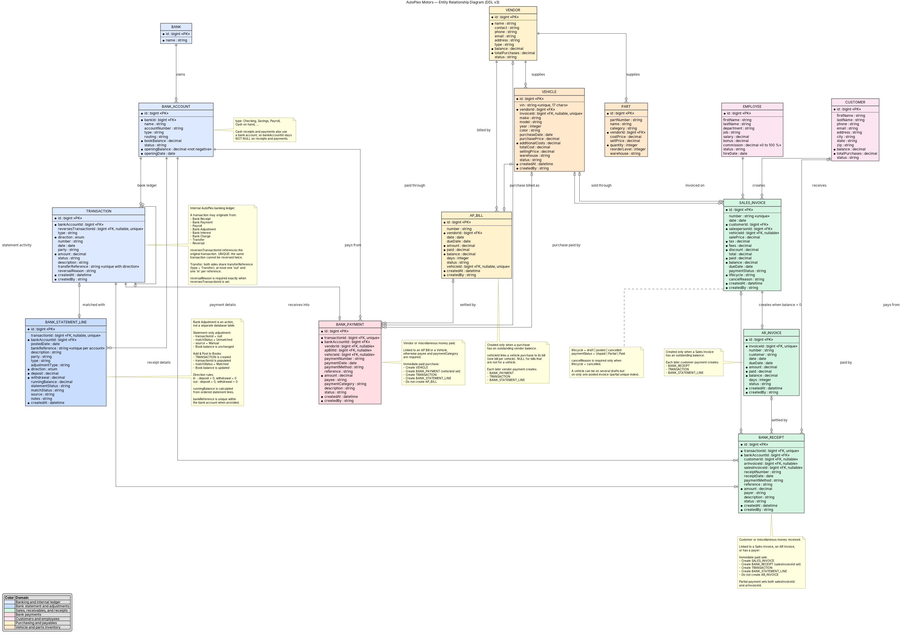
2. Use Case Diagrams


3. Activity Diagrams

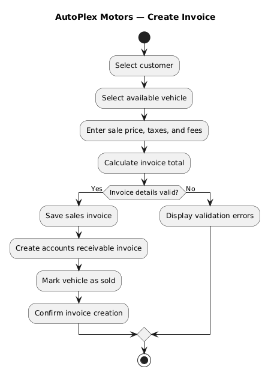

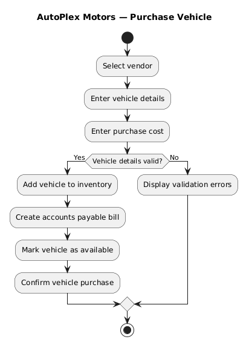
4. Class Diagrams
Domain class diagrams


Detailed class diagrams

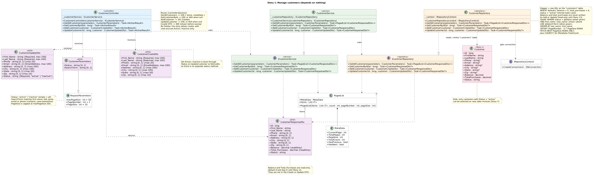

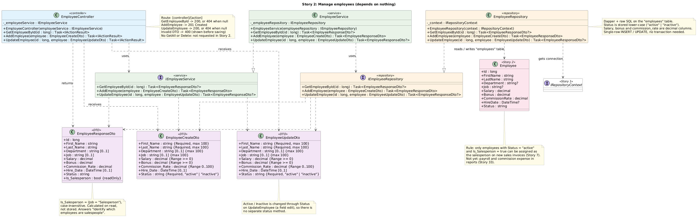

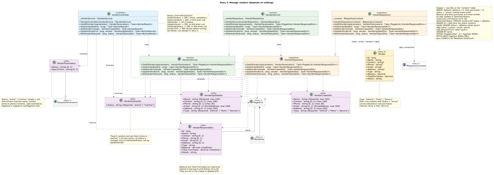

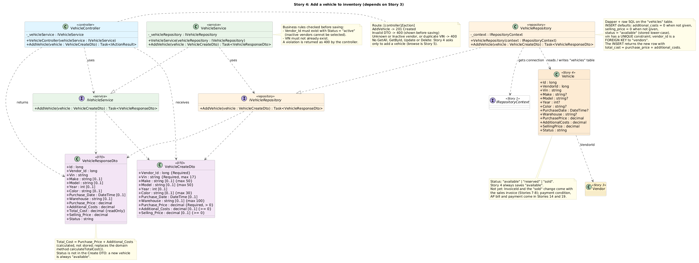


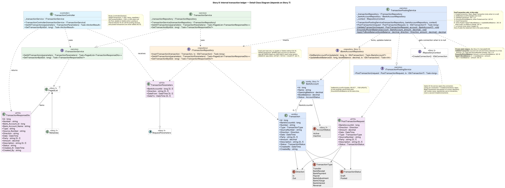

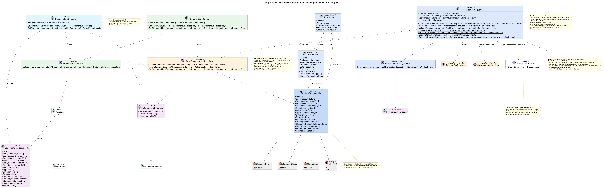

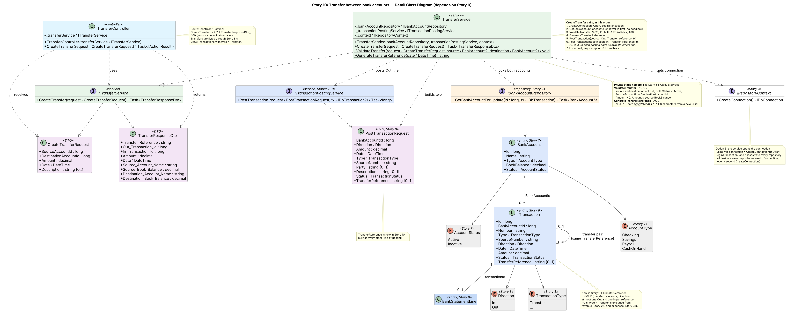

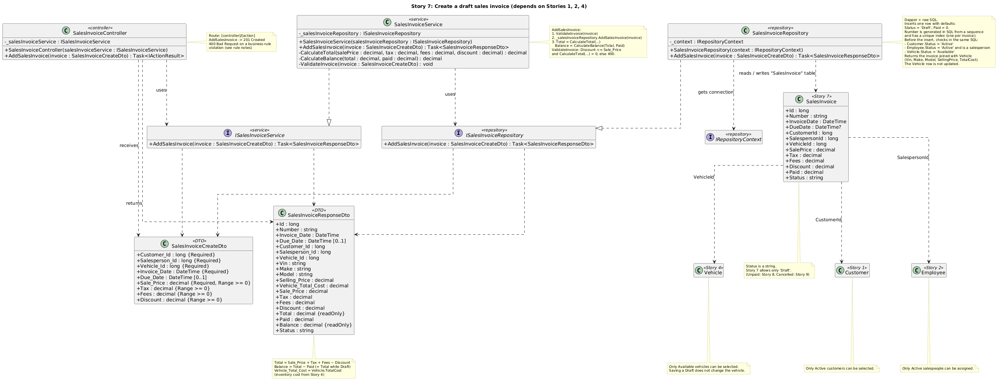

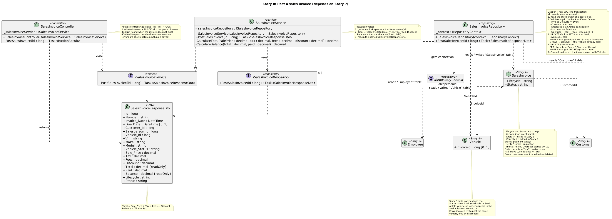

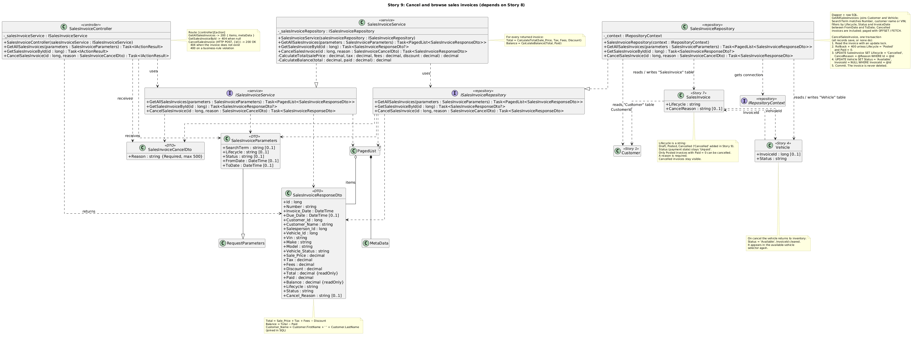

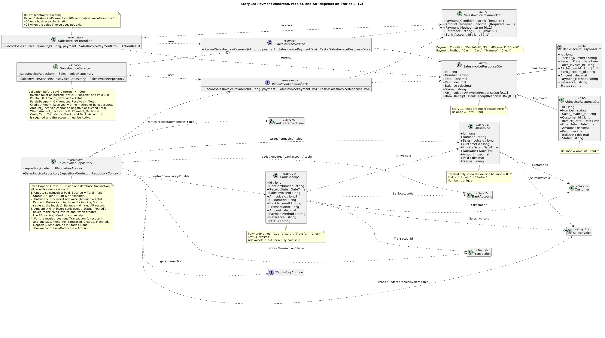

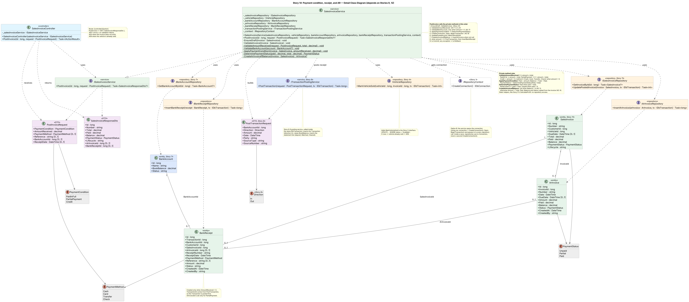

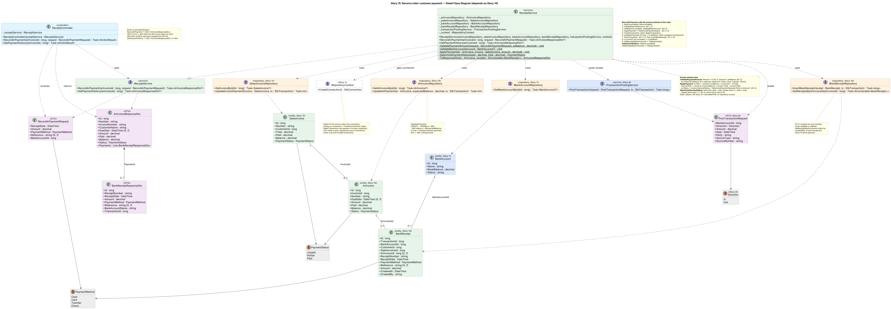

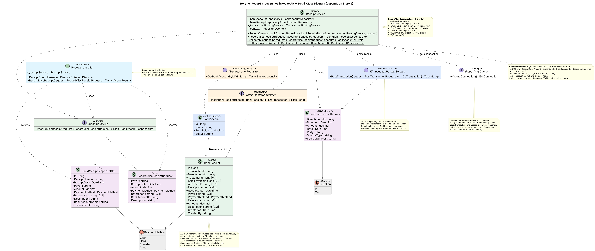

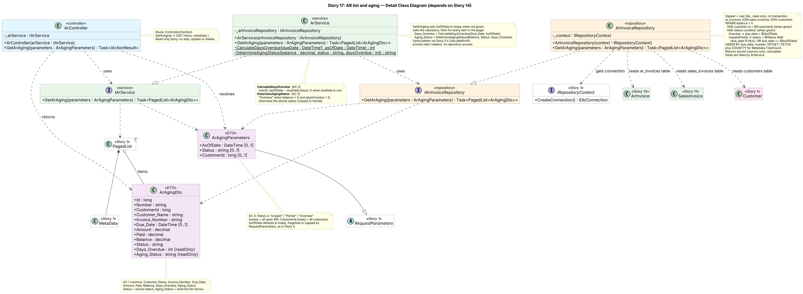

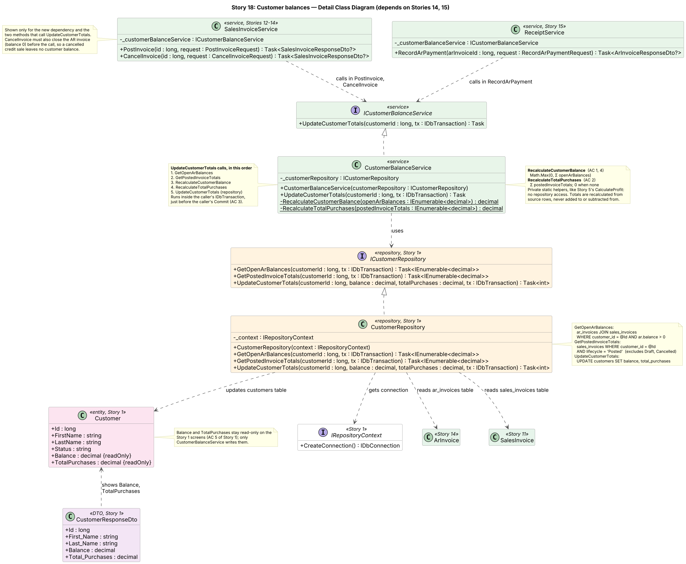
5. Sequence Diagrams


6. State Machine Diagrams


7. Object Diagrams


Project Documents
Documents from the docs folder of this repository.
- Software Requirements Specification
- Incremental User Stories (the page summary above follows version 3)
- Traceability Matrix
- Docs folder README